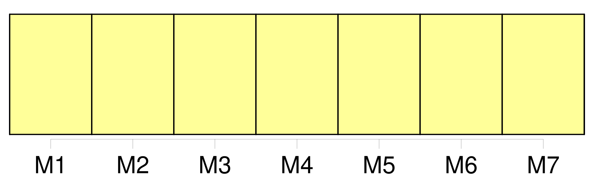
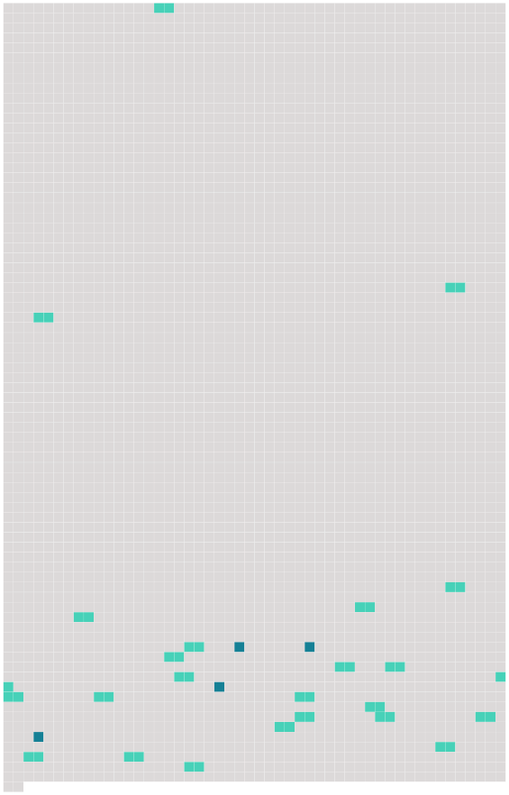

Longueur nb maillons : 28 mentions |
  |
Il procède ou veille à l'exécution des actes et décisions pris en application de [la convention] et prend les décisions administratives qui ne relèvent pas de la compétence des autres organes de l'Institut. [70 phrases]
Au sens de [la convention] , les chercheurs de l'Institut sont les étudiants ou chercheurs titulaires de titres universitaires nationaux justifiant de leur aptitude à entreprendre ou poursuivre des recherches et qui répondent aux conditions prévues à l'article 27 paragraphe 3 et sont admis à l'Institut. [4 phrases] L'admission à l'Institut est prononcée par le jury d'admission sur la base des règles fixées par [la convention] et par les dispositions réglementaires arrêtées par le conseil supérieur. [67 phrases]
Article 29 [3 phrases]
Le conseil supérieur se réunit immédiatement après l'entrée en vigueur de [la convention] [1 phrases]
Le conseil supérieur conclut l'accord de siège et met en place les autres organes prévus dans [la convention] [7 phrases]
L'adhesion prend effet à la date à laquelle le conseil supérieur, statuant à l'unanimité et en accord avec l'Etat adhérent, a déterminé les modifications nécessaires à apporter aux dispositions de [la convention] , notamment à [son] article 6 paragraphe 7 et à [son] article 19 paragraphe 1.
Article 33 [1 phrases]
Article 34 [1 phrases]
[La convention] s'applique au territoire européen des Etats contractants, aux départements français d'outre-mer ainsi qu'aux territoires français d'outremer. [1 phrases]
Par dérogation au paragraphe 1, [la convention] ne s'applique pas aux zones de souveraineté du Royaume-Uni de Grande-Bretagne et d'Irlande du Nord à Chypre ; [elle] ne s'applique pas non plus aux îles Anglo-Normandes et à l'ile de Man sauf si le gouvernement du Royaume-Uni déclare, au moment d'adhérer à [la convention] ou à une date ultérieure, que [la convention] s'applique a un ou plusieurs de ces territoires. [1 phrases] Par dérogation au paragraphe 1, [la convention] ne s'applique pas aux iles Féroé.
Toutefois, le gouvernement du royaume de Danemark peut notifier, par une déclaration déposée au plus tard le 31 décembre 1975 auprès du gouvernement de la République italienne, qui en remet une copie certifiée conforme au gouvernement de chacun des autres Etats contractants, que [la convention] est applicable à ces îles. [1 phrases]
Tout Etat contractant peut déclarer, par notification au gouvernement de la République italienne, au moment de la signature, de la ratification, de l'acceptation ou de l'approbation de [la convention] , ou de l'adhésion à [celle -ci] , ou à tout moment ultérieur, que [la convention] s'appliquera à celui ou à ceux des territoires de dehors de l'Europe désignés par ladite déclaration, dont il assure les relations internationales.
Article 36
[Elle] entre en vigueur le premier jour du mois suivant la date de la réception de la dernière notification de l'accomplissement de ces formalités par le gouvernement de la République italienne.
Article 37
Article 38 Les textes de [la convention] rédigés en langues anglaise, danoise et irlandaise, tels qu'ils figurent en annexe à la décision du conseil supérieur précisant les modifications rendues nécessaires par l'adhésion du royaume de Danemark, de l'Irlande et du Royaume-Uni de Grande-Bretagne et d'Irlande du Nord, font foi au même titre que les textes originaux mentionnés ci-dessus, et le gouvernement de la République italienne en remet une copie certifiée conforme au gouvernement de chacun des autres Etats contractants. |
 |
La ressource peut être téléchargée sur la page Ortolang
Si vous avez des questions ou vous voyez des erreurs, merci d'envoyer un mail à silvia.federzoni89@gmail.com
Site développé par S. Federzoni (contact)